Benvenuto a Valencia! 🇪🇸
Esplora la web-app e lasciati guidare attraversdo la storia, i simboli e la cultura di Valencia!
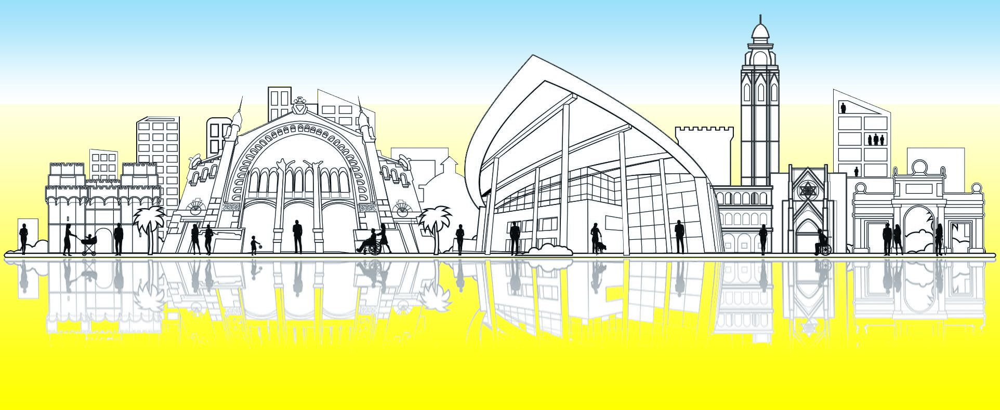
Mappa Interattiva 🗺️
Storia di Valencia
Contenuti
1. Fondazione
Tutto ebbe inizio su un'isola fluviale strategicamente bagnata dal fiume Turia e sul tracciato della via Augusta, più importante strada romana della Penisola Iberica...
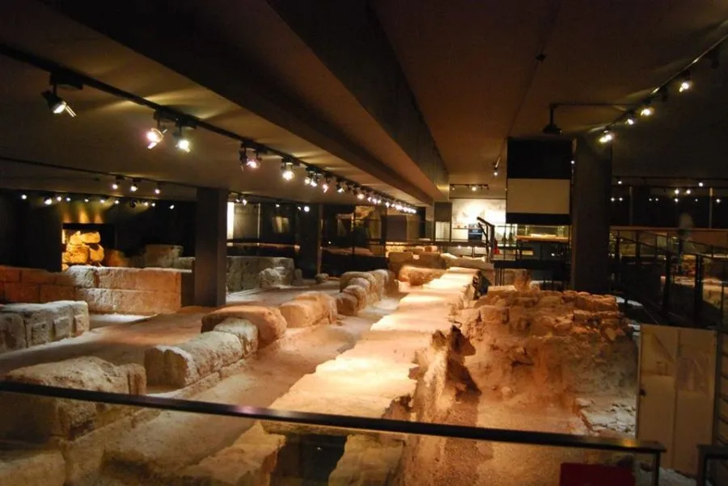2. Epoca Romana
3. Balansiya, epoca araba
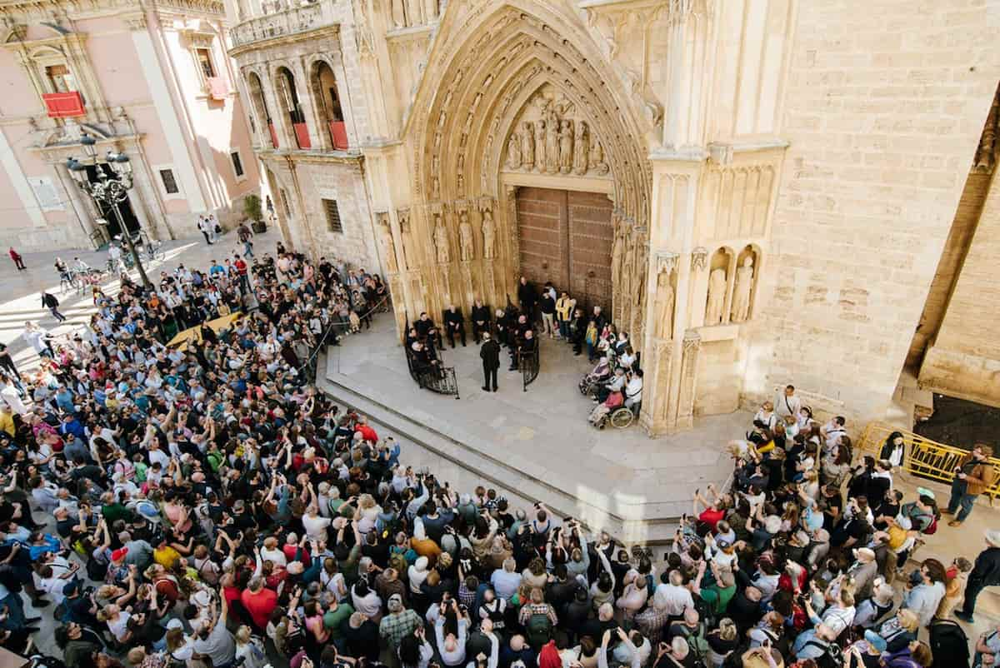
4. Siglo de Oro

5. Epoca Moderna
6. Il '900
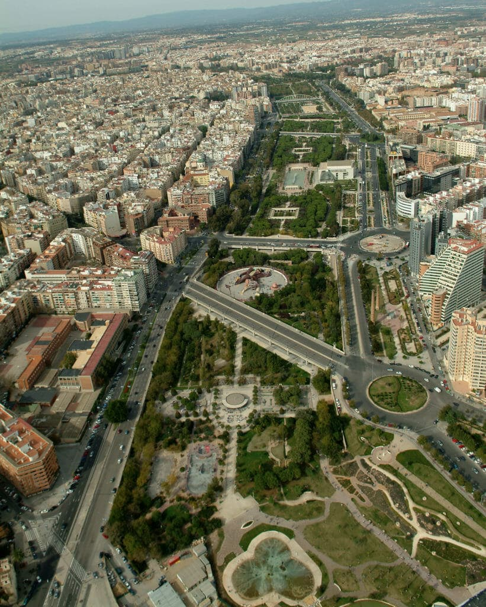
7. Epoca Contemporanea
Simboli di Valencia
1. El Escudo
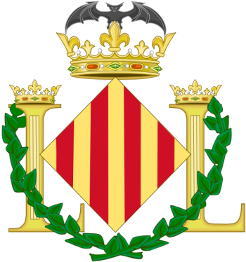
2. La Real Senyera

3. El Rat Penat
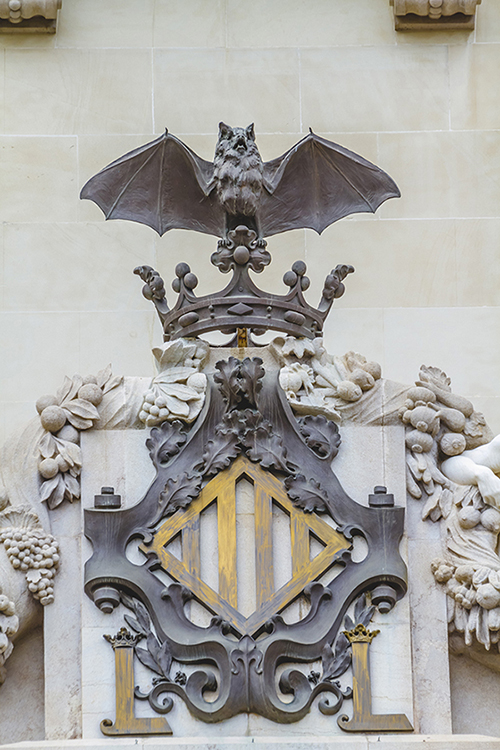
4. Los Naranjos
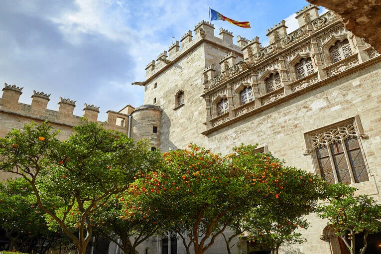
5. El Masclet
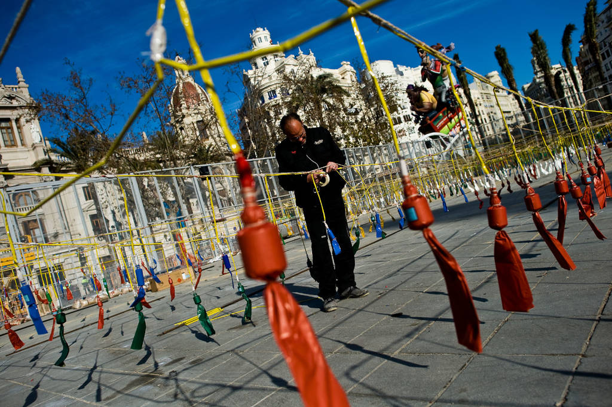
I Punti di Interesse
Caricamento dei Punti di Interesse...
Tradizioni e Gastronomia
Contenuti
Gastronomia
La Paella Valenciana
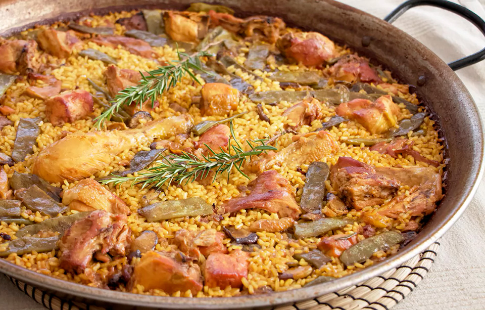
L’Agua de Valencia

L’Horchata e i Fartons
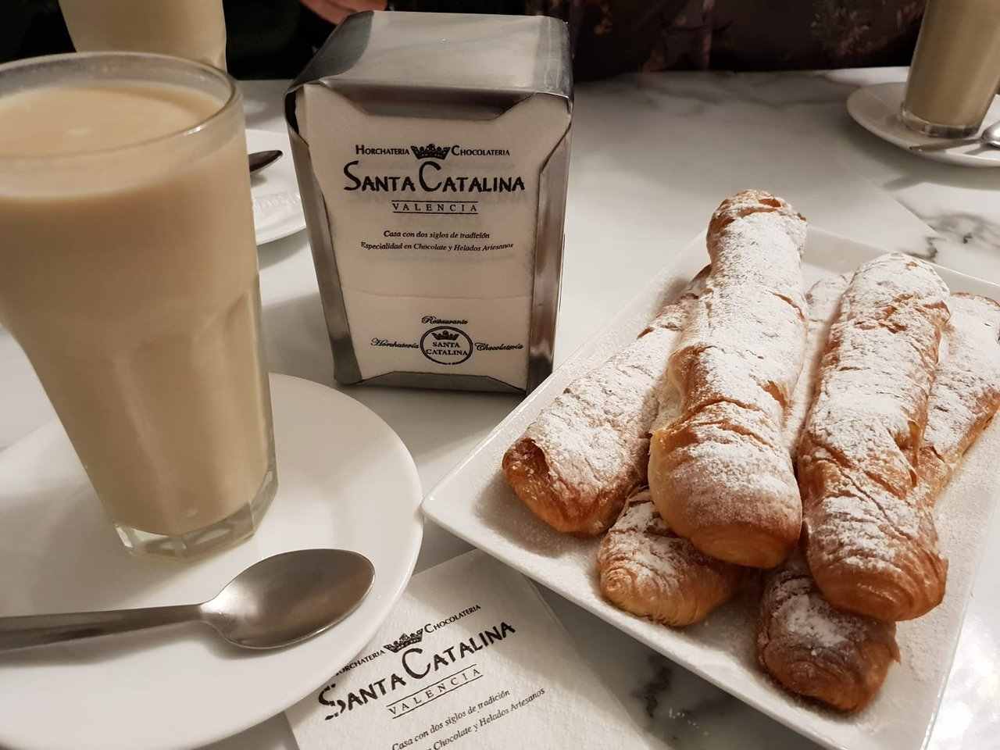
Feste e tradizioni
L'origine
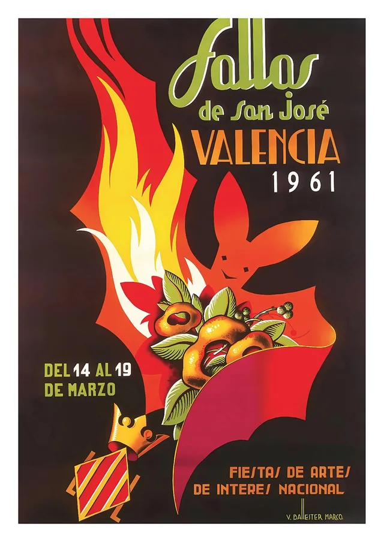
Il Gremio e i Ninots
Il Ritmo della festa
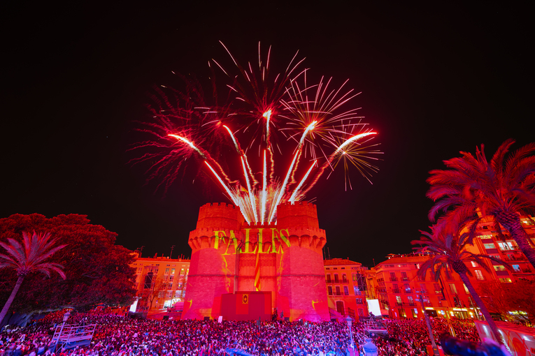
L’Ofrenda
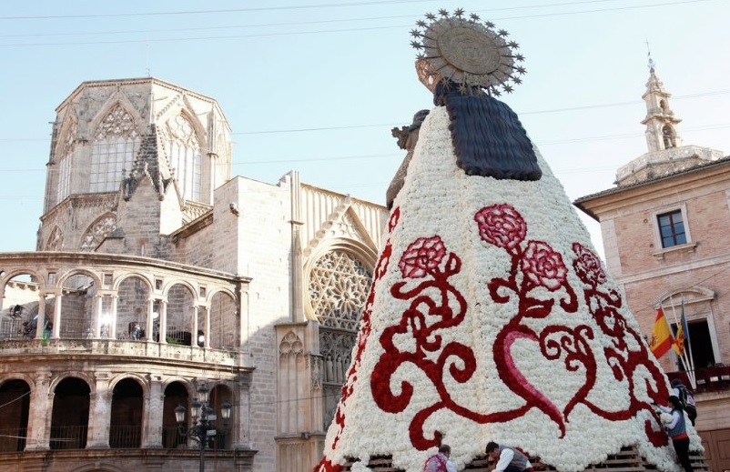
La nit de la Cremà

Checklist & Documenti
Spunta le voci man mano che prepari il viaggio. I dati vengono salvati in locale nel tuo browser.